flowchart TD A[Install Modules] --> B click A "#install-modules" B[Annotate with Modules] --> C click B "#annotate-with-modules" C[Filter] --> D click C "#filter" D[Layout] -->E click D "#layout" E[Save Package] --> F click E "#Save-Package" F[Share Package] click F "#share-package"
6 Making A Package
6.1 Learning Objectives
By the end of this tutorial, you should be able to create and publish an OpenCRAVAT package:
- Begin creating your package.
- Select the annotators from the OpenCRAVAT store that you want in your package.
- Create filters for your package to focus on the most important results.
- Design the layout that will appear on the Variant tab in the GUI when people use your package.
- Select the reporters from the OpenCRAVAT store that people can use to export your package results.
- Publish your package in the OpenCRAVAT store to make it widely available to the community
What is a package —-include hyperlink and description (EDIT BULLET POINTS!!!!)
● To simplify the selection of annotators, filters, layout, and reports, we have begun creating packages
with pre-selected combinations of these selections, tailored for different scientific questions.
● Example: The drug Interaction Package identifies variants with potential impact on drug response. It
bundles ClinVar, PharmGKB, and DGIdb (drug interaction database) and is filtered to show only
variants with ClinVar annotation of drug response or those listed in PharmGKB or non-synonymous
variants on genes in DGIdb. A clean layout of selected widgets is provided, and Excel and tab–
delimited reports are automatically generated.
● Package filters can be adjusted by users on the Filter Tab.
6.1.1 When to use a package vs. individual annotators
With hundreds of annotators available in the OpenCRAVAT store, users can benefit from a package combining a set of annotators relevant to a particular question and pre-selected filters and reports. Packages are handy when you want to automate an analysis workflow that will be repeated many times.
Choosing when a package is the best choice can significantly impact the efficiency of analysis. Below, we explore the pros of using a package versus individual annotators.
6.1.2 Pros of using a package
Comprehensive Analysis: Packages include multiple annotation modules, providing a more thorough analysis of variants.
Ease of Use: Packages are pre-configured, making them easier to set up without manually selecting individual annotator modules.
Consistency: Using a package ensures consistent application of annotations across different analyses.
6.2 How to make a package
In this example, we will create a package that uses eight variant effect prediction tools: SIFT, BayesDel, CADD Exome, VEST4, PrimateAI, GERP++, FATHMM, and REVEL, if you use the below process often:
Install multiple variant effect predictor modules (e.g., SIFT, BayesDel, CADD Exome, VEST4, PrimateAI, GERP++, FATHMM and REVEL).
Score a list of variants with this “ensemble” of predictors.
Filter for variants predicted to be pathogenic only.
Update the layout to see the most useful widgets.
Make CSV and Excel reports.
6.3 Package Build Process
Click on each box in the flowchart below to jump to that part of the build process.
Creating a package module requires the following:
6.4 Open your local installation of OpenCRAVAT
Before we create a new package, load OpenCRAVAT and make sure the packages we need are installed:
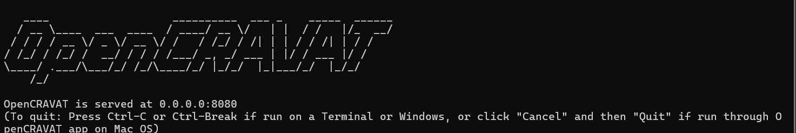
6.5 Install Modules
Ensure the annotator modules you want to include in the package have been installed from the store.
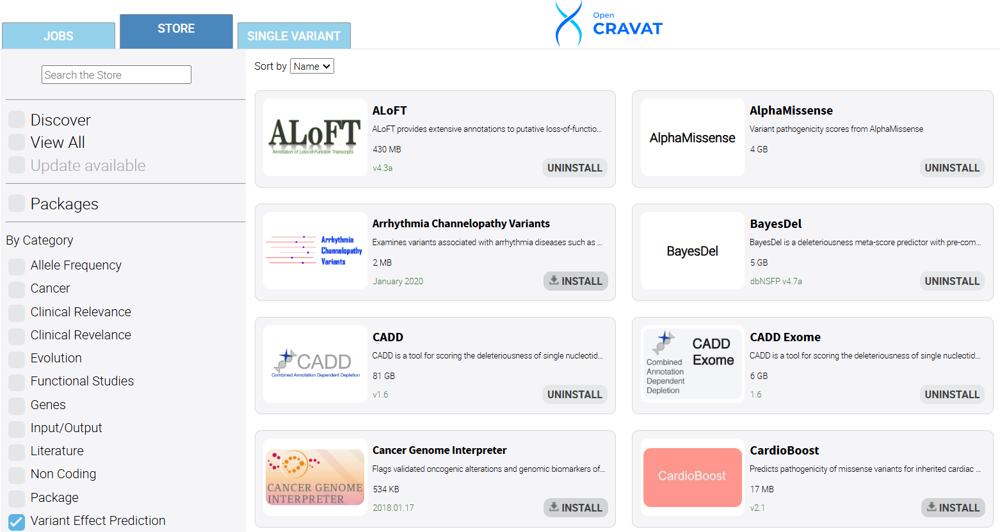
6.6 Annotate with Modules
For this tutorial, we will use the Example HGVS variants included in the OpenCRAVAT software. Under the variants tab, choose the HGVS button. Next, choose the annotators you would like to include in your package.
We will focus on variant effect predictor annotators and choose SIFT, BayesDel, CADD Exome, VEST4, PrimateAI, GERP++, FATHMM, and REVEL.
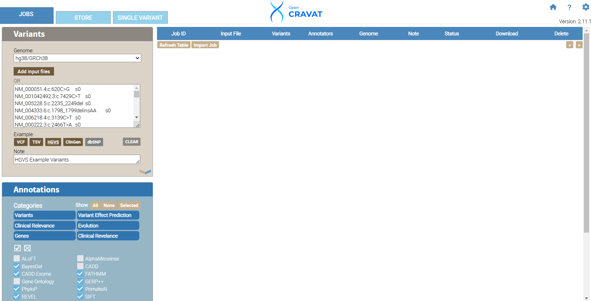
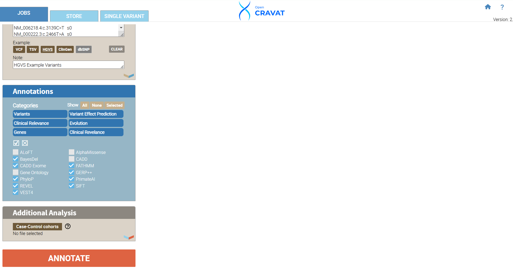
We have successfully annotated 49 variants. Next, we will develop filters to include the ACMG/AMG Benign and Pathogenic columns for every annotator we include in our job.
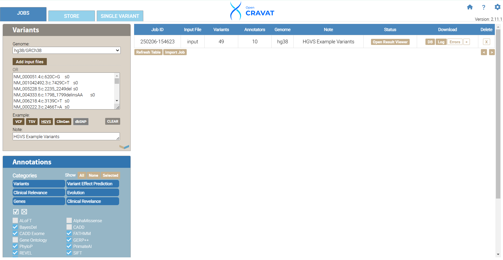
6.7 Filtering: Query Builder
To begin filtering, click the FILTER tab, navigate to the section entitled Variant Properties, and click Query Builder. The Query Builder allows you to create custom filters. Click the Query Builder header under the variant properties tab to begin. For our package, we will include variants with data in every annotator’s Benign OR Pathogenic column. Hover your mouse inside the left side of the parenthesis and click the “+” sign to build your query. Choose BayesDel from the first drop-down menu and choose ACMG/AMP Pathogenic (PP3), click the “+” and choose BayesDel and ACMG/AMP Benign (BP4). Repeat the same selections for the rest of your annotators. Once you have added all the annotators, click the first “and” in your query to change our query to include only “or” filtering options. This method is inclusive to all of our annotators and gives us a high likelihood of having more variants included in our results and some benign and pathogenic variants.
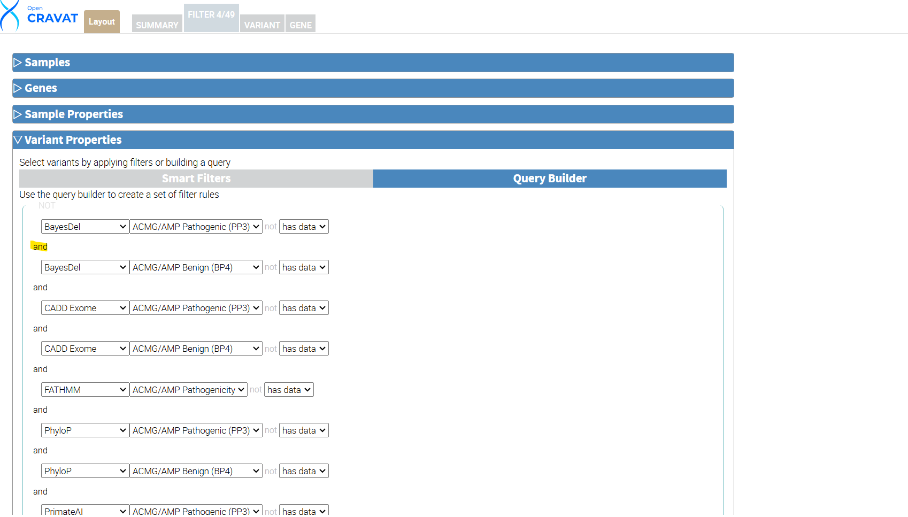
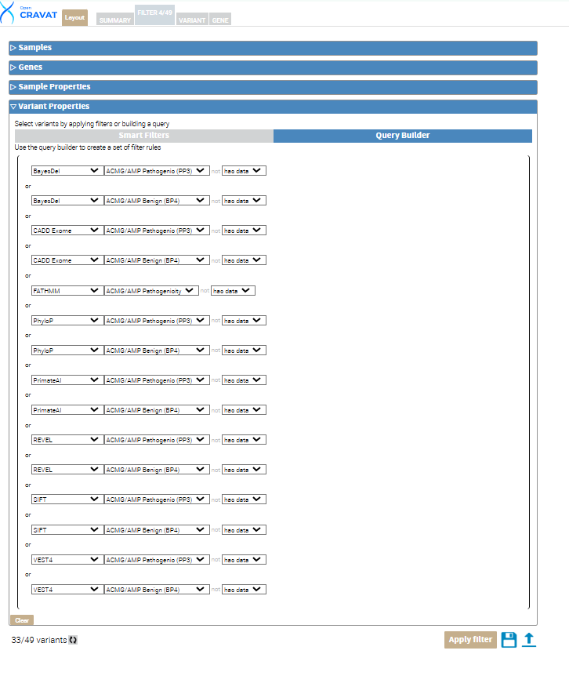
Next, click the circular refresh button at the bottom left next to the variant count. Then click the Apply filter button. This leaves us with 33 out of 49 variants that meet the criteria of our custom filter.
6.8 Layout
OpenCRAVAT allows you to customize the variant tab results layout under the Variant tab. Updating the layout allows the user to view their results more easily and include/exclude information important to their analysis.
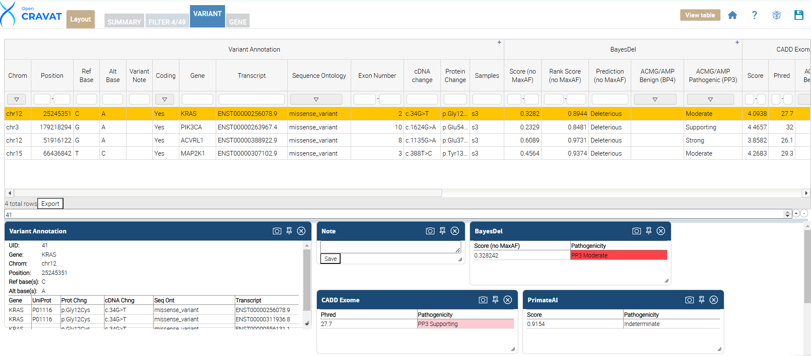
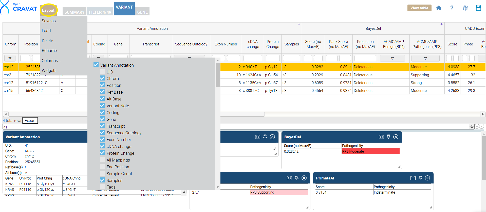
Once you click the Variant Tab, update your results layout by clicking the layout button. This is done by clicking the “Layout” button, which opens a menu to select or deselect columns. Next, unselect the options you DO NOT want to see in your results viewer. Below is a table showing each annotator’s name and the included (selected) columns in our package.
| Annotator | Columns |
|---|---|
| Variant Annotation | Chrom,Position,Ref Base,Alt Base,Coding,Gene,Transcript,Sequence Ontology,Exon ,Number,cDNA change,Protein Change,Samples |
| BayesDel | ACMG/AMP Benign (BP4), ACMG/AMP Pathogenic (PP3) |
| CADD Exome | ACMG/AMP Benign (BP4), ACMG/AMP Pathogenic (PP3) |
| FATHMM | ACMG/AMP Benign (BP4) |
| PhyloP | ACMG/AMP Benign (BP4), ACMG/AMP Pathogenic (PP3) |
| PrimateAI | ACMG/AMP Benign (BP4), ACMG/AMP Pathogenic (PP3) |
| REVEL | ACMG/AMP Benign (BP4), ACMG/AMP Pathogenic (PP3) |
| SIFT | ACMG/AMP Benign (BP4), ACMG/AMP Pathogenic (PP3) |
| VEST4 | ACMG/AMP Benign (BP4), ACMG/AMP Pathogenic (PP3) |
6.9 Save Package
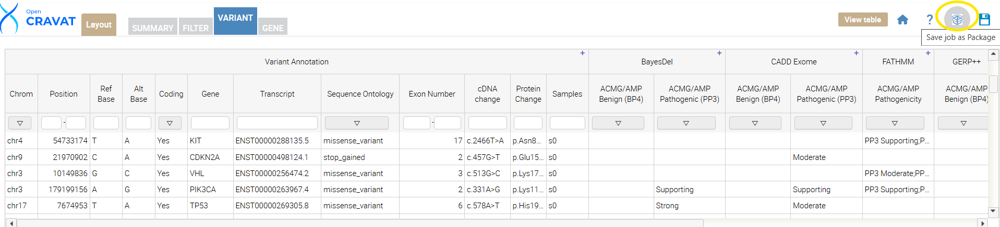
Next, locate the “save job as a package” button. Click the button, name your package “Calibrated Variant Effect Predictors,” and press submit. Once your package is created, you can confirm it was created by navigating to the OpenCRAVAT GUI main page, clicking “Packages,” and confirming that your package is in the drop-down menu.
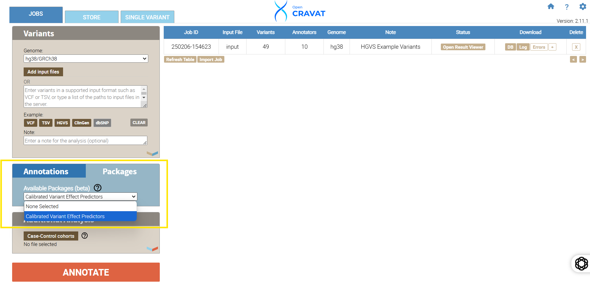
6.10 Publish Your Package
We will walk you through publishing your package to the OpenCRAVAT store, making it available to the broader community.
6.10.1 Before You Publish: Essential Checks
Before sharing your hard work, ensure your annotator is polished and ready for prime time. Here’s a checklist of key areas to focus on:
6.10.2 1. Comprehensive Markdown Documentation
- Describe Your Data: Explain the package’s data sources and biological significance clearly.
- Explain the Value: Why should someone use your package? What insights does it provide?
- Define Output Values: Thoroughly describe the meaning of each output column.
- Provide External Links: Include links to source databases or more detailed documentation.
6.10.3 2. Robust Test Files
Tests are crucial for maintaining the quality of your package, especially when updates are made.
Creating Test Files:
- Ensure Correct Output: Verify that your package produces accurate results.
- Select Representative Variants: Choose a diverse set of variants that cover different scenarios:
- Variants that yield annotations.
- Variants that do not yield annotations.
- Variants representing different variant types (e.g., insertions, deletions).
- Create the Test Directory: Create a subdirectory named
testin your module directory. - Create the Input File: Inside
test,create a file namedinputcontaining your selected variants in the cravat input format. - Run the Package: Execute the following command:
bash oc run input -t text -a packagename(Replacepackagenamewith your package’s name.) - Rename the Output: Rename the generated
input.tsvfile tokey. - Clean Up: Remove any other files from the
testdirectory, leaving onlyinputandkey. - Run the Test: In a directory outside your module, run:
bash oc util test -m packagename - Verify Success: The test should pass. A temporary file named
cravat_test_12345will be created; you can safely delete it.
Maintaining Tests:
- Run the tests after every update.
- If a test fails, investigate the cause.
- Update the
keyfile if the expected output has changed. - Fix any bugs in your module if the test fails due to an error.
6.10.4 3. Eye-Catching Logo (Optional)
- A logo can enhance the visibility of your annotator.
- Save your logo as
logo.pngin your module directory.
6.10.5 4. Comprehensive YML File
The YML file defines the metadata and output structure of your annotator.
Key Fields:
output_columns: Defines the columns displayed in the viewer.name: Matches the output column name in your Python code.title: The display name of the column.type: The data type (e.g.,int,float,string).width(Optional): Adjusts the column width.desc(Optional): Adds a tooltip description.hidden: true(Optional): Hides the column by default.
tags: Categorizes your annotator (refer to the store for valid tags).description: A brief summary of your annotator (around 140 characters).developer: Information about the developer or organization.nameorganizationemailwebsitecitation(MLA format)
datasource: The data version or date.smartfilters(Optional): Defines custom filters.requires(Optional): Specifies required widgets.private: true(Optional): Makes the annotator private.
Example:
Refer to the ClinVar annotator’s markdown file for syntax examples.
6.11 Creating an OpenCRAVAT Store Account
- Run the Command: Execute the following command in your terminal:
bash oc store new-account user@example.com pw1234(Replaceuser@example.comandpw1234with your desired credentials.) - Verify Your Account: Check your email for a confirmation link and click it.
6.12 Publishing Your Package
- Run the Publish Command: After verifying your account, use the following command to publish your annotator:
bash oc store publish -u user@example.com -p pw1234 -d|c module_name- Replace
user@example.com,pw1234, andmodule_namewith your credentials and annotator name. - Use
-dif your module includes data in thedatafolder. - Use
-cif your module does not include data.
- Replace
6.13 Unpublishing Your Package
To unpublish a specific version of your annotator, send a DELETE request to the store’s API.
import requests
username = "user"
password = "password"
requests.delete("http://karchinlab.org/cravatstore/example_module/1.0.0", auth=(username, password))<Response [404]>